Orbital NUqueSt (Link)


NUqueSt is a 2D Top-Down Action-Adventure Singleplayer Questing game. It was heavily inspired by Stardew Valley, incorporating core gameplay elements such as fighting, farming and mining. It features 3 different biomes, 8 Non-Playable-Characters (NPCs), 6 ores, 3 enemies, 1 boss and 40 quests.


The main purpose of creating NUqueSt was to help familiarise incoming undergraduates with the challenges of various courses in a fun and interactive way. We achieved this by gamifying each course into a quest. For example, the computing course “CS1010” became an N-Queens puzzle, where players had to provide two valid configurations for placing 6 queens on a 6x6 board. These quests are given by the NPCs, and reward the player with GPA upon completion.
 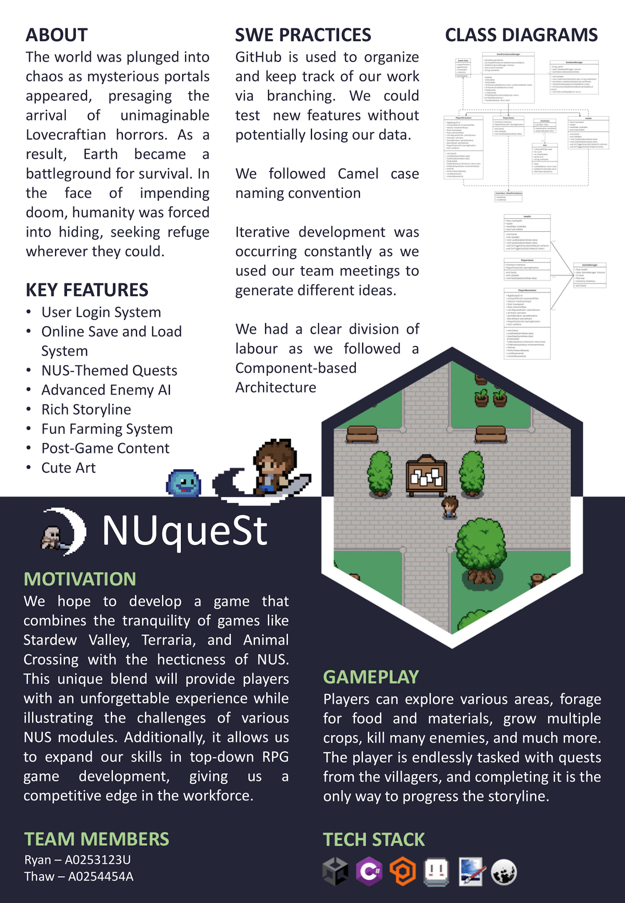
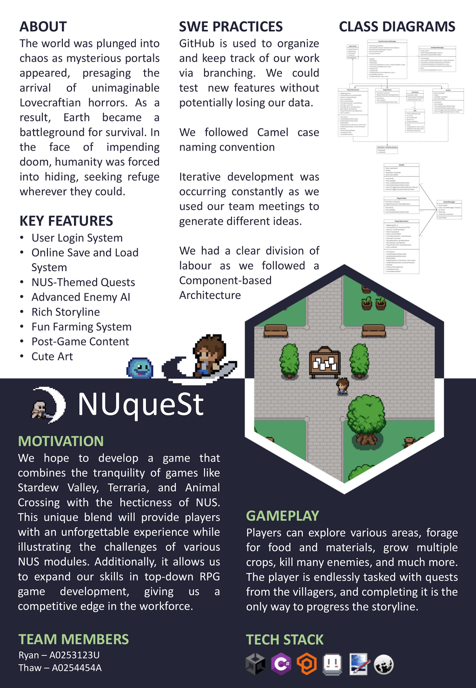


My friend Thaw and I developed NUqueSt for CP2106 (Orbital), a three-month software engineering course at NUS during AY22/23 Special Term. We followed an agile methodology with monthly sprints. Each sprint began with planning feasible features and ended with peer reviews, alongside the creation of a poster and video to showcase the project. We then incorporated feedback in subsequent sprints, guiding us toward the right direction.


For our project, we were awarded Artemis (Extreme), the highest level of achievement, placing us roughly in the top 5% of the cohort. The link to the digital certificate can be found here.
Data Analysis (Link)
This project is a compilation of multiple data analysis projects, most of which incorporate the use of various Machine Learning algorithms for predictions.
Breast Cancer Analysis (Link)
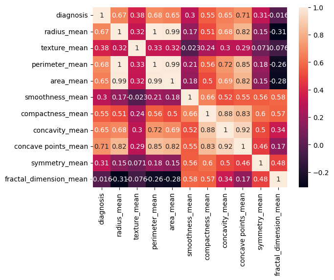
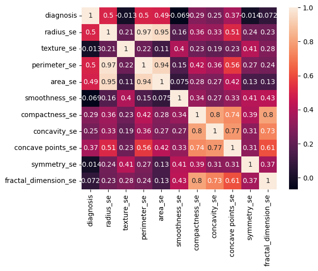
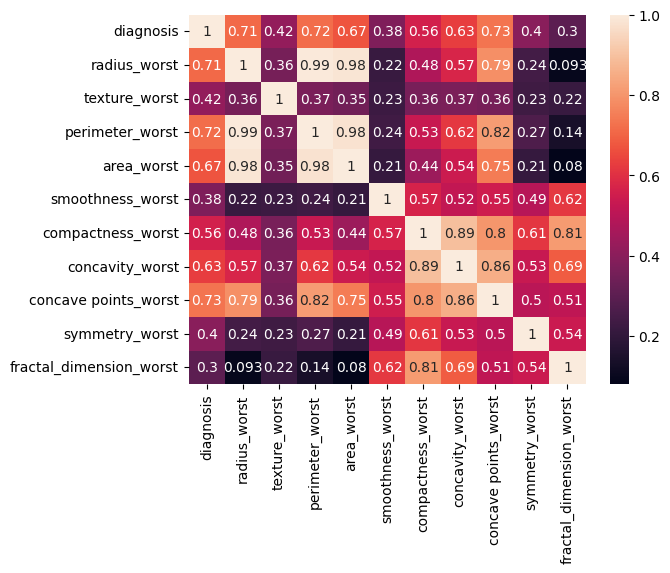
The project aimed to classify breast cancer samples (benign vs. malignant) by analyzing imaging attributes from a fine needle aspirate (FNA). It also explored mislabelled data detection to improve data quality.
This project was completed by me and three others for IT1244, a machine learning course at NUS. We chose this topic because we believed that discovering an effective solution could significantly benefit the medical field.
Dataset:
- 569 samples labeled 'B' (benign) or 'M' (malignant)
- 30 features capturing mean, standard error and "worst" measurements of cell nuclei (i.e., radius, texture, concavity)
- Correlation analysis identified the most influential features (i.e., radius, concavity, concave points)
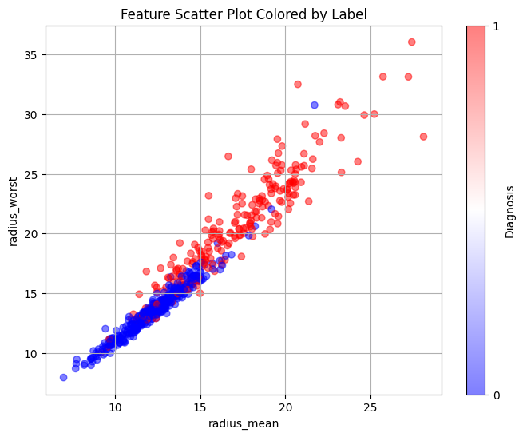
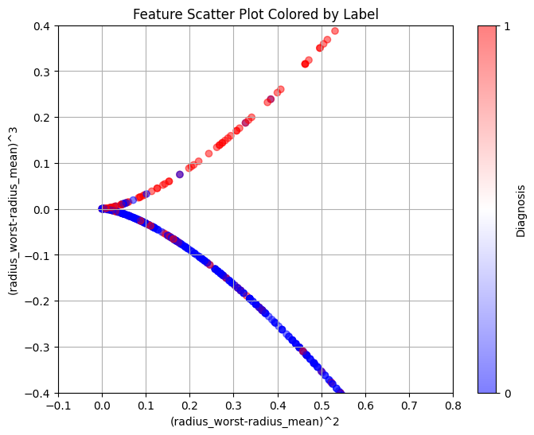
The problem was split into two tasks. For the first task, we are told that some labels have been mislabelled, and we are required to detect them. We utilised several methods, combining them together to perform a multi-faceted approach in the detection process.
The attribute 'radius' refers to the radius of the tumour. The bigger the tumour, the more harmful it is, falling into the malignant category. We performed feature engineering on this attribute, taking the squared difference and cubed difference of radius_worst and radius_mean. This allowed the data to split almost perfectly into two categories, one benign (blue), the other malignant (red). The blues above the curve and the reds below the curve are considered mislabelled data.
Task 1 - Mislabelled Data Detection Methods:
- Feature Engineering: Computed differences (worst - mean) and examined squared/cubed values to distinguish benign vs. malignant curves
- K-Means Clustering: Ran multiple initializations to find consistent outliers
- Logistic Regression: Tested whether flagged points consistently mismatched the known labels
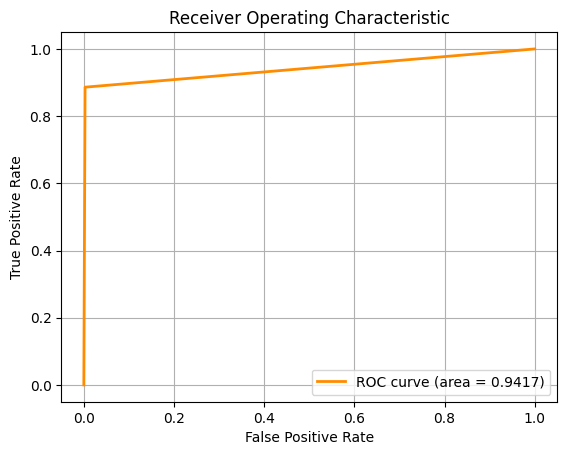
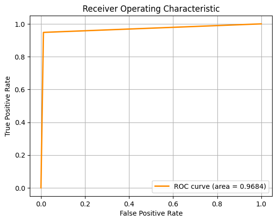
For the second task, we are required to classify the type of breast cancer ('B' vs 'M') given the diagnosis. To do this, we employed the use of several Machine Learning algorithms, using 10-fold cross-validation and multiple metrics like Accuracy, F1 Score and ROC-AUC to assess the model.
For the pictures, from left to right, the ROC-AUC curves are obtained from the Machine Learning approaches below respectively. If the image is too small, you can zoom in or right click, then open image in new tab.
Task 2 - Breast Cancer Classification Approaches:
- Logistic Regression (LR)
- k-Nearest Neighbours (kNN)
- Random Forest (RF)
- Support Vector Machines (SVM)
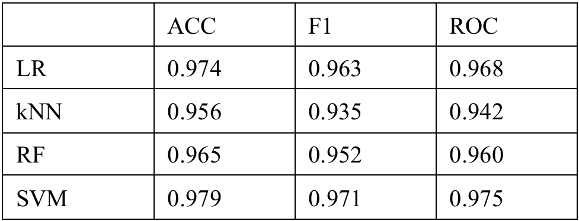
Key Results:
- SVM performed best across all metrics, suggesting it handles high-dimensional, non-linear data effectively
- LR came in a close second, indicating the decision boundary might not be overly complex
- kNN struggled in higher dimensions without additional feature reduction
- RF showed signs of overfitting and noise sensitivity with certain irrelevant features
Enhancing Guest Experience (Link)
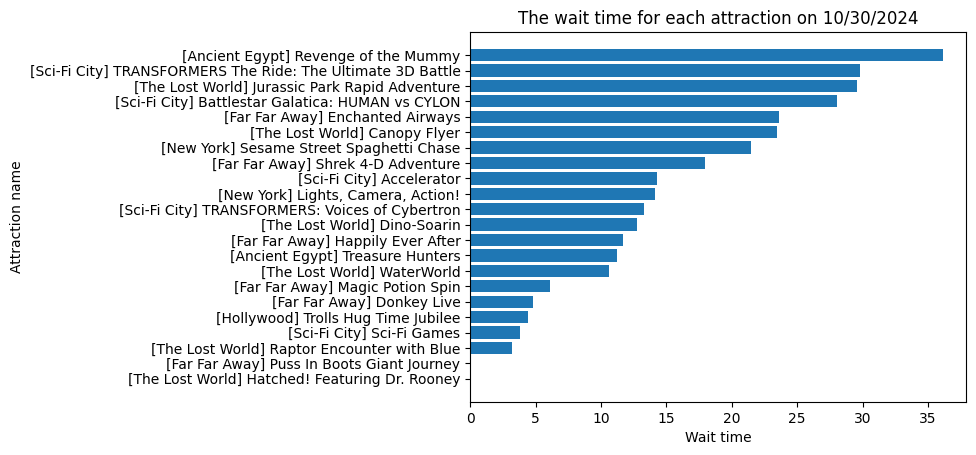
The project aimed to enhance overall guest experience at Universal Studios Singapore (USS). This project was completed by me and 7 others for DSA3101, a course in NUS on practical Data Science.
My objective is to optimally allocate staff to different attractions at an amusement park (e.g., Universal Studios Singapore) in order to reduce wait times and improve guest satisfaction. Two models: Linear Optimization and Greedy Heuristic, are compared.
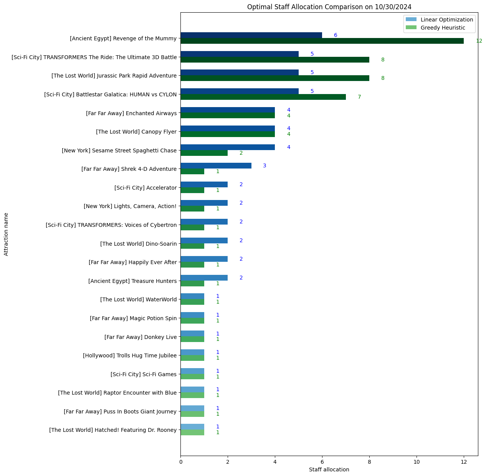
Model 1 - Linear Optimization:
- Objective: Minimize the total deviation from a target staff allocation
- Constraints:
- Total staff assigned must not exceed the available staff
- Each attraction has a minimum staff requirement
- Staff allocation must be close to forecasted wait times
- Insights:
- Tends to produce allocations proportional to ride wait times
- Occassionally fails to find a feasible solution if constraints are too tight
- Total staff assigned must not exceed the available staff
- Each attraction has a minimum staff requirement
- Staff allocation must be close to forecasted wait times
- Tends to produce allocations proportional to ride wait times
- Occassionally fails to find a feasible solution if constraints are too tight
Model 2 - Greedy Heuristic:
- Objective: Reduce overall wait times by continually allocating staff to the ride with the highest current wait time
- Wait-Time Formula: Each additional staff reduces wait time by a certain factor (i.e., 0.95)
- Insights:
- Always yields a feasible solution
- May produce a more uniform allocation than the linear model
- Assumes wait time decreases consistently with each staff addition, which might not always be true
- Always yields a feasible solution
- May produce a more uniform allocation than the linear model
- Assumes wait time decreases consistently with each staff addition, which might not always be true
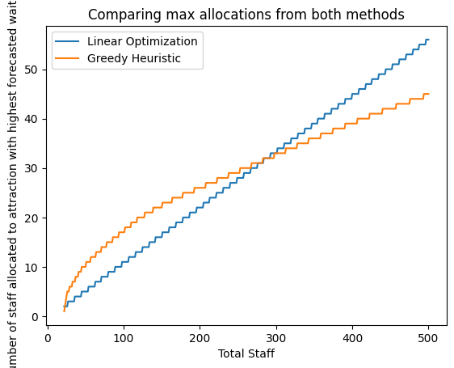
Comparing Both Models:
- Allocations:
- Linear Optimization often mirrors the distribution of forecasted wait times
- Greedy Heuristic focuses on whichever ride currently has the longest wait, potentially distributing staff less proportionally
- Decision Rule:
- By default, pick the model that allocates more staff to the highest-wait attraction
- If both allocate equally, default to Linear Optimization (since it tracks wait-time distribution more closely)
- Trade-Offs:
- Greedy is guaranteed feasible but might over-allocate staff to a single ride if it assumes continuous wait-time reductions
- Linear Optimization can fail in certain scenarios but often reflects a more directly proportional distribution
- Linear Optimization often mirrors the distribution of forecasted wait times
- Greedy Heuristic focuses on whichever ride currently has the longest wait, potentially distributing staff less proportionally
- By default, pick the model that allocates more staff to the highest-wait attraction
- If both allocate equally, default to Linear Optimization (since it tracks wait-time distribution more closely)
- Greedy is guaranteed feasible but might over-allocate staff to a single ride if it assumes continuous wait-time reductions
- Linear Optimization can fail in certain scenarios but often reflects a more directly proportional distribution
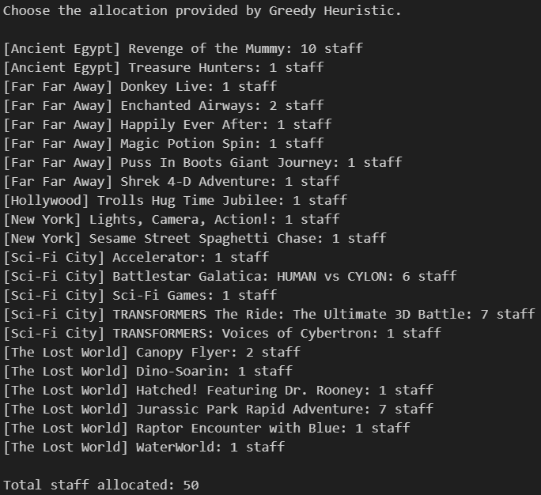
Usage and Implementation:
-
User Inputs:
- Forecasted wait times
- Total available staff
- Minimum staff per attraction
- (Optional) A reduction factor for the Greedy model
-
Outputs:
- Recommended staff allocation from each model, plus a final “chosen” allocation based on the decision rule
- Bar plots visualizing how each model distributes staff
- Observations:
- Both models run quickly (milliseconds)
- Stakeholders can override the recommended choice if they prefer a more uniform distribution or have other practical considerations
- Forecasted wait times
- Total available staff
- Minimum staff per attraction
- (Optional) A reduction factor for the Greedy model
- Recommended staff allocation from each model, plus a final “chosen” allocation based on the decision rule
- Bar plots visualizing how each model distributes staff
- Both models run quickly (milliseconds)
- Stakeholders can override the recommended choice if they prefer a more uniform distribution or have other practical considerations
By comparing Linear Optimization and a Greedy Heuristic, this system provides two distinct allocations for staff assignment—one aligning more proportionally with forecasted wait times, and another always feasible but potentially less proportional. Users can choose the final allocation that best fits their operational goals and constraints.
Board Games (Link)
This project was created out of an interest in exploring how artificial intelligence (AI) can be applied to board games, which require varying levels of strategic thinking and logic.
Chess (Link)
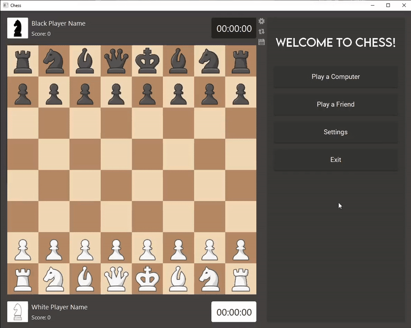
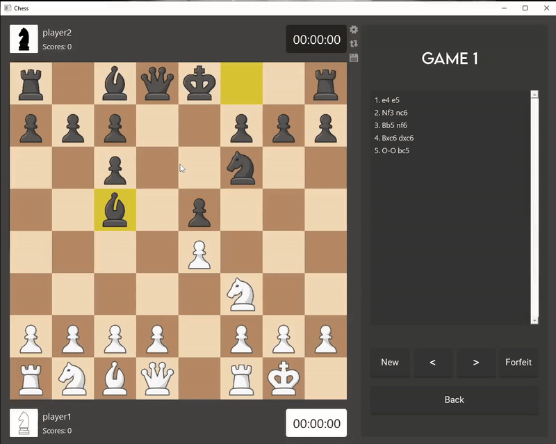
I developed the game logic and user interface for Chess using Qt Creator, an IDE for creating and deploying applications. The code is done in C++ to achieve faster runtimes and enhance my AI's efficiency.
I chose to make an AI for Chess because I believe there is still room for improvement in leading Chess AIs—for instance, Stockfish can reach depths of 100 but often draws games against itself or other AIs. My aim is for my AI bot to prioritize winning, rather than settling for draws.
Current level of AI: Incomplete
Connect Four (Java Link | Python Link)
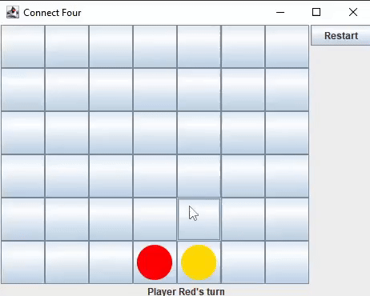
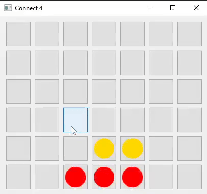
I developed the game logic and user interface for Connect Four in two languages: Java (using Swing and AWT) and Python (using Qt5).
I decided to build a Connect Four AI first, believing it would be simpler than creating an AI for Chess. This process would also help me gain insights into the challenges I would face when developing a Chess AI.
Current level of AI: Incomplete
Puzzle Solvers (Link)
This project was created out of an interest in applying computer vision and AI to puzzle-solving. The end goal of this project is to make a phone application, capable of reading pictures taken from the phone. Its main functionality would be to solve puzzles, but I may choose to expand into a more general direction.
Sudoku (Link)
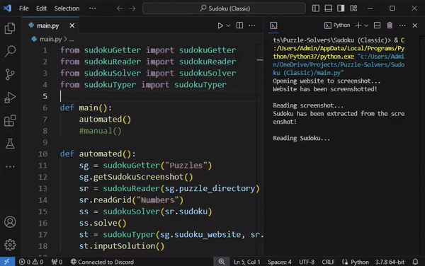